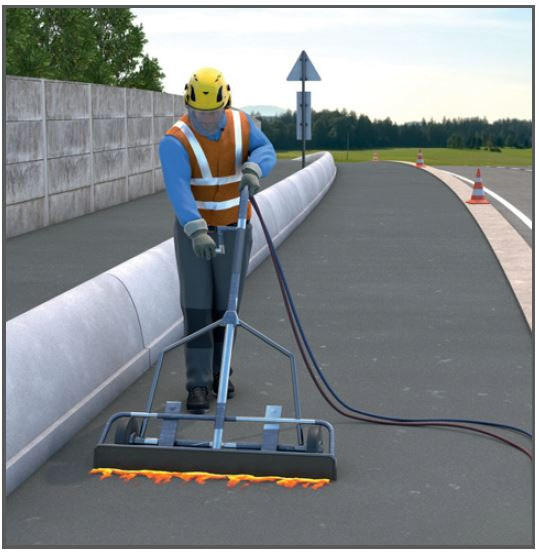
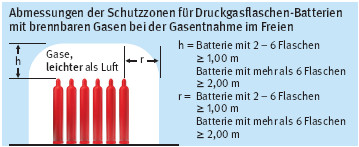

Gefährdungen
- Beim Umgang mit Flammgeräten besteht Brand- und Explosionsgefahr.
Schutzmaßnahmen
Brenngasversorgung mit Acetylen
- Wegen des hohen Gasbedarfs ist die Verwendung von Einzelflaschenanlagen nur in Ausnahmefällen möglich, z. B. zum Anlegen einer Probefläche.
- Kleine Batterieanlagen dürfen aus max. 6 Einzelflaschen bestehen.
- Einzelflaschen sind mit genormten Flaschenkupplungen zu verbinden.
- An kleinen Batterieanlagen nur einen Flammstrahl-Handbrenner anschließen.
- Gasentnahme nur über zugelassenen Druckminderer und bauartgeprüfte trockene Gebrauchsstellenvorlagen.
- Gebrauchsstellenvorlagen direkt hinter dem Druckminderer anbringen.
- In großen Batterieanlagen mit mehr als 6 Einzelflaschen max. 3 Einzelflaschen mit Flaschenkupplungen über Hochdruckventile an eine Hochdrucksammelleitung anschließen.
- Gasentnahme aus großen Batterieanlagen nur über Zentralanschluss am Ende der Hochdrucksammelleitung mit bauartzugelassener
- handbetriebener Schnellschlusseinrichtung,
- Hauptdruckminderer,
- trockener Gebrauchsstellenvorlage.
- Gasentnahme aus Flaschenbündeln nur über Zentralanschluss mit bauartzugelassener
- selbsttätiger Schnellschlusseinrichtung,
- Hauptdruckminderer,
- trockener Gebrauchsstellenvorlage.
Darauf achten, dass alle Ventile geöffnet sind.
- Bei Anschluss mehrerer Flammstrahlbrenner jeden Brenner unmittelbar hinter dem Druckminderer mit Gebrauchsstellenvorlage absichern.
- Größe der Gebrauchsstellenvorlage auf erforderliche Gasmenge abstimmen.
- Größe der Flaschenbatterie- oder Bündelanlage in Abhängigkeit von der Anzahl, Art und Größe der Brenner auswählen (Tab. 2). (max. Acetylenentnahme = 500 l/h und Druckgasflasche)
Versorgung mit Sauerstoff
Die Versorgung kann aus Einzelflaschen, Flaschenbatterieanlagen oder Flaschenbündeln erfolgen.
- Entnahme aus
- Einzelflaschen nur über geprüfte Druckminderer,
- Batterieanlagen und Flaschenbündeln nur über Hauptventil und Batteriedruckminderer.
Betrieb
- Acetylen-Einzelflaschen und ortsveränderliche Batterieanlagen müssen von einer Schutzzone umgeben sein.
- Acetylen-Flaschen müssen bei der Gasentnahme stehen oder mit ihrem Flaschenventil mindestens 40 cm höher als der Flaschenfuß gelagert werden.
Ausnahme: mit einem roten Ring am Flaschenkopf gekennzeichnete Flaschen.
- Anschlussstutzen der Flaschenventile und Abgangsstutzen der Druckminderer dürfen nicht auf andere Druckflaschen gerichtet sein.
- Sauerstoffarmaturen öl- und fettfrei halten.
- Sauerstoffflaschenventile nicht ruckartig öffnen.
- Mindestens 5,00 m lange Schläuche benutzen.
- Neue Gasschläuche vor erstmaliger Benutzung ausblasen.
- Als Schlauchverbindungen nur Schlauchtüllen mit Schlauchschellen oder Patentkupplungen verwenden.
- Gasschläuche vor mechanischen Beschädigungen und gegen Anbrennen schützen und nicht über Armaturen an Flaschen aufwickeln.
- Bei Flammrückschlägen Brenner erst nach Behebung der Störung erneut zünden.
- Persönliche Schutzausrüstung verwenden:
- Schutzbrille mit Seitenschutz und Schweißerschutzfilter Stufe 2 – 8,
- schwer entflammbarer Schutzanzug,
- Schutzhelm, Sicherheitsschuhe, Lederhandschuhe,
- Gesichts- und Nackenschutz, besonders bei Arbeiten über Kopf,
- Gehörschutz.
- Für ausreichende Belüftung sorgen, z. B. Ventilatoren, Gebläse, Absaugung im Entstehungsbereich.
- Beim Flammstrahlen beschichteter Teile ist die Entstehung gesundheitsgefährdender Gase und Dämpfe zu überprüfen.
- Beim Entfernen von Rostschutzanstrichen Atemschutz mit Partikelfilter P3 benutzen.
| 1 |
Prüffristen nach Betriebssicherheitsverordnung |
|
| Flüssiggasanlage |
Wiederkehrende Prüfung |
durch wen? |
| Aufstellung, Dichtheit |
tägliche Kontrolle |
Fachkundiger (Benutzer)
§ 2 (5) BetrSichV |
| gesamte Anlage |
mind. alle 2 Jahre |
zur Prüfung befähigte Person
§ 2 (6) BetrSichV |
| 2 |
Richtwerte für einen Flammstrahlgang |
|
| Brennerart |
Brennerbreite mm |
Acetylen l/h |
Sauerstoff l/h |
| Handbrenner |
50
100
150
200
250
300 |
1000
2000
3000
4000
5000
6000 |
1250
2500
3750
5000
6250
7500 |
| Maschinenbrenner |
500
750 |
5000
7000 |
6250
10000 |

Zusätzliche Hinweise für den Brandschutz
- Alle brennbaren Teile aus der gefährdeten Umgebung entfernen oder durch nicht brennbare Abdeckungen schützen. Als gefährdete Umgebung gilt ein Bereich von mindestens 10 m vor und 2 m beiderseits der Flamme.
- Bei brandgefährdeter Umgebung Löschmittel bereitstellen.
- Arbeitsstelle auf Brandnester überwachen (Brandwache), ggf. auch nach Arbeitsschluss.
Prüfungen
- Erforderliche Prüfungen gemäß dem Ergebnis der Gefährdungsbeurteilung, vor der ersten Inbetriebnahme, vor Wiederinbetriebnahme nach prüfpflichtigen Änderungen und den Prüffristen nach Betriebssicherheitsverordnung in Anhang 3 Abschnitt 2 Tabelle 1 veranlassen.
- Auch Prüfhinweise in Betriebsanleitung der Hersteller beachten.
- Ergebnisse der regelmäßigen Prüfungen dokumentieren und aufbewahren.
Arbeitsmedizinische Vorsorge
- Arbeitsmedizinische Vorsorge nach Ergebnis der Gefährdungsbeurteilung veranlassen (Pflichtvorsorge) oder anbieten (Angebotsvorsorge). Hierzu Beratung durch den Betriebsarzt.
07/2019